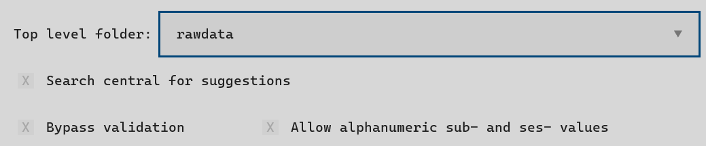
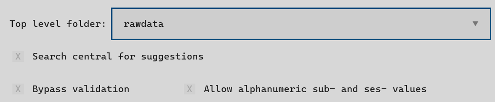

How to Create Folders#
datashuttle creates project folders according to the NeuroBlueprint specification.
Before jumping into the folder-creation process, we’ll quickly review the key features of the specification) that are created folders must conform to.
In NeuroBlueprint for each subject and session there are datatype folders in which acquired data is saved:


The subject and session folder names must begin with sub- and ses-
respectively—other key-value pairs are optional. All acquired data must go
in a datatype folder with a
standard name.
No strong requirements are made on filenames of acquired data, but it is recommended to include the subject and session number if possible.
Now the specification has been introduced, let’s dive in to folder creation!
Creating project folders#
In the below example, folders will be created in the rawdata folder,
within the my_first_project project folder.
The project folder is located at the local path specified when setting up the project.
We will create datatype folders behav and funcimg
within a ses-001_<todays_date> for both sub-001 and sub-002.
The below example uses the @DATE@ convenience tag to automate
creation of today’s date. See the section below for more
information on
convenience tags.


Folders are created in the Create tab on the Project Manager page.
We can fill in the subject and session names and select datatype folders to create.
Note that the sub- or ses- prefix is not actually required and will
be automatically added.
Create tab shortcuts
The Create tab has a lot of useful shortcuts.
First, double-clicking the subject or session input boxes will suggest the next subject or session to create, based on the local project. If a Name Template is set, the suggested name will also include the template.
Holding CTRL while clicking will add the sub-
or ses- prefix only.
Next, the Directory Tree has a number of useful shortcuts. These are
activated by hovering the mouse and pressing one of the below combination
of keys (you may need to click the Directory Tree) first:
- Fill an input
CTRL+Fwill fill the subject or session input with the name of the folder (prefixed withsub-orses-) that is hovered over.- Append to an input
CTRL+Ais similar to ‘fill’ above, but will instead append the name to those already in the input. This allows creation of lists.- Open folder in system filebrowser
CTRL+Owill open (any) folder in the system filebrowser.- Copy the full filepath.
CTRL+Qwill copy the entire filepath of the file or folder that is hovered over.
Create tab Settings
Clicking the Settings button on the Create tab will give access
allow setting the top-level folder, and bypass validation.
 

{kind=link}
- Top-level folder
This dropdown box will set whether folderes are created in the
rawdataorderivativestop-level folder- Bypass validation
If on, this setting will allow folder creation even if the names are not valid (e.g. break with NeuroBlueprint).
This screen is also used to set validation against Name Templates.
Creating folders can be done with the create_folders() method in the Python API.
We simply need to provide the subject, session and datatypes to create:
from datashuttle import DataShuttle
project = DataShuttle("my_first_project")
created_folders = project.create_folders(
top_level_folder="rawdata",
sub_names=["sub-001", "002"],
ses_names="ses-001_@DATE@",
datatype=["behav", "funcimg"]
)
We provides datashuttle with a list of subject, session and datatype folders to create.
Note that the sub- or ses- prefix is not actually required and will
be automatically added.
The method outputs created_folders, which contains a list of all
Paths to all created datatype folders.
Folder Validation
The names of the folders to be created are validated on the fly against NeuroBlueprint. If the folder names will break with the specification, an error will be raised and the folders will not be created.
Validation can be extended by defining custom templates for subject or session names—if folders don’t match the template an error will be raised. See How to use Name Templates for more information.